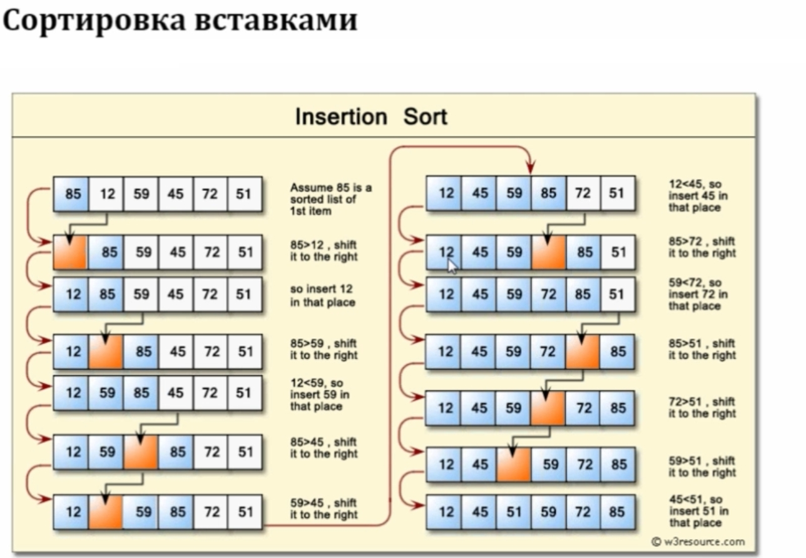

Сортировка вставками.
Нужно написать программу, которая сортирует список методом "Cортировки вставками".

Время выполнения алгоритма: O(n^2).
"""СОРТИРОВКА ВСТАВКАМИ"""
def insertion_sort():
global a
for i in range(1, len(a)): # обойдем в цикле индексы списка с 1 до последнего
current_digit = a[i] # запоминаем текущее число
number_index = i # индекс будем далее понижать в цикле
while number_index > 0 and a[number_index - 1] > current_digit: # в цикле сравниваем искомое число с предыдущим и заменяем текущее значение списка по индексу предыдущим значением по индексу пока не установим число на своё место
a[number_index] = a[number_index - 1]
number_index -= 1
a[number_index] = current_digit # вставляем наша число на место
# список на сортировку
a = [10, 5, 2, 1, 3, 20, 11, 15, 4, 7, 100, 33, 6, 400, 55, 11, 1, 111, 7, 100, 33, 6, 400, 55, 11, 1, 111]
insertion_sort()
print()
print(a)
print()